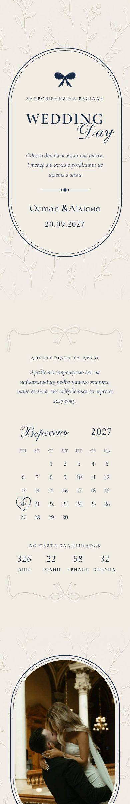

Наведіть мишку на телефон або погортайте його, щоб побачити все запрошення.
Весілля
Wedding Day
Синій і айворі
Про шаблон
Класика в синьому й айворі: фото в арках, що відкриваються при гортанні, імена, що пишуться наживо, календар з датою, відлік, програма та анкета.
У кожному запрошенні
- Персональне посилання для кожного гостя
- Анкета RSVP з відповідями в кабінеті
- Мапа, програма дня й дрес-код
- Ваші тексти, фото й кольори
Вартість — від 3 400 ₴ · готово за 3 робочі дні · Усі ціни